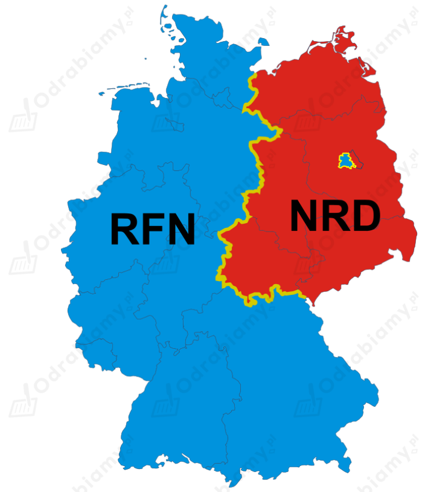
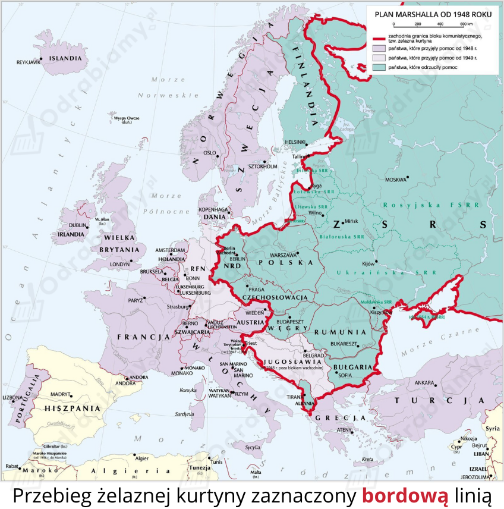
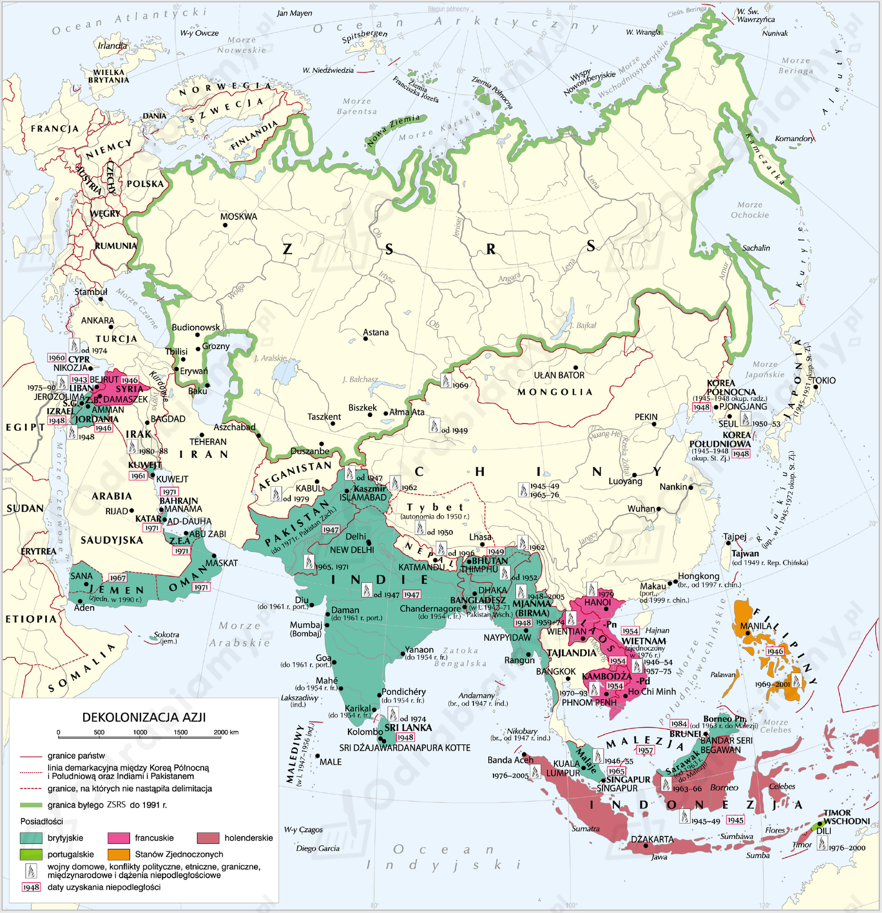
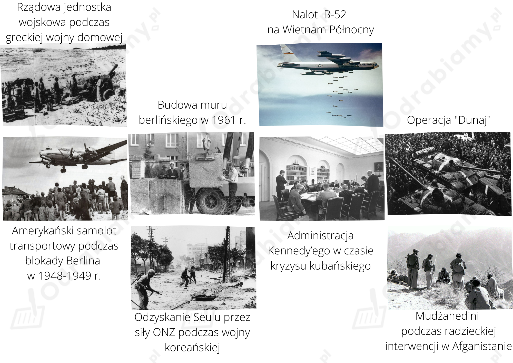
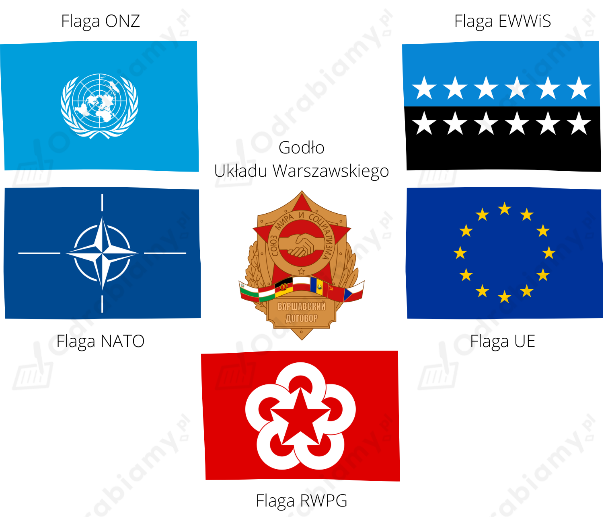

1) Polska nie przystąpiła do planu Marshalla, ponieważ:
2) Efekty planu Marshalla dla Europy Zachodniej:
Efekty planu Marshalla dla Europy Środkowo-Wschodniej:
Proces kształtowania się dwóch państw niemieckich po 1945 r.:

Mapa przedstawiająca RFN i NRD, źródło mapy: Wikimedia Commons.
Żelazna kurtyna to pojęcie odnoszące się do izolacji państw pozostających pod dominacją ZSRS od niekomunistycznego świata. Churchill tłumaczył, że żelazna kurtyna to granica wpływów między demokratycznym Zachodem a komunistycznym Wschodem. Kraje znajdujące się na wschód od tej linii są w strefie wpływów sowieckich.
Powstanie żelaznej kurtyny:
Pojęcie żelaznej kurtyny odnosi się do sytuacji po II wojnie światowej. Premier Wielkiej Brytanii, Winston Churchill, wygłosił 5 marca 1946 r. w Fulton (USA) przemowę, w której wezwał Stany Zjednoczone do przeciwstawienia się działaniom i polityce Józefa Stalina. To wystąpienie uważa się za początek zimnej wojny. Za najbardziej wymowny dowód istnienia żelaznej kurtyny uważa się budowę muru berlińskiego.

Autor mapy: K. Chariza i zespół, źródło: www.zpe.gov.pl
Proces dekolonizacji Azji Południowej - najważniejsze informacje:
Azja Południowa to region Azji obejmujący kraje subkontynentu indyjskiego na południe od Himalajów, czyli m.in. Indie, Pakistan, Nepal, Bhutan, Bangladesz oraz wyspiarskie państwa Sri Lankę i Malediwy.
W 1885 r. największa indyjska partia polityczna - Indyjski Kongres Narodowy - wykorzystała zaangażowanie Brytyjczyków w wojnę i wysunęła postulat przyznania Indiom niepodległości. Rząd brytyjski nie spełnił tych żądań, a nawet zaostrzył kurs wobec ruchu wyzwoleńczego. Doprowadziło to do licznych wystąpień zbrojnych przeciwko władzy kolonialnej, tłumionych przez wojska brytyjskie.
W tak napiętej sytuacji aktywność polityczną rozpoczął Mahatma Gandhi. Wykorzystał on swe wcześniejsze doświadczenia w zmaganiach z administracją kolonialną i przeciwstawił zbrojnej konfrontacji taktykę obywatelskiego nieposłuszeństwa. Metoda biernego oporu, którą poparła większość Hindusów, była dokuczliwa dla władz kolonialnych. Uwięzienie Gandhiego nie przyniosło zamierzonego skutku. Brytyjczycy musieli zasiąść do rozmów. W obradach tzw. indyjskiego Okrągłego Stołu wzięli udział przedstawiciele władz brytyjskich oraz delegaci dwóch największych społeczności religijnych Indii: hinduistów i muzułmanów. W 1935 r. parlament przyjął ustawę o przekształceniu Indii w federację prowincji oraz księstw. Wciąż jednak władza znajdowała się w rękach gubernatorów i wicekróla.
Dopiero po zakończeniu II wojny światowej utrzymanie panowania nad Indiami okazało się niemożliwe. Na pomocy trójstronnych porozumień między hinduistami, muzułmanami i Brytyjczykami utworzono dwa państwa Indie i Pakistan. 15 sierpnia 1947 roku proklamowano ich niepodległość.
W 1971 roku od Pakistanu oderwała się kolejna prowincja, tworząc Bangladesz.
Proces dekolonizacji Azji Południowo-Wschodniej - najważniejsze informacje:
Azja Południowo-Wschodnia to region Azji obejmujący Półwysep Indochiński i Archipelag Malajski wraz z Filipinami. Należą do niego takie państwa jak Mjanma, Tajlandia, Kambodża, Laos, Wietnam, Malezja, Singapur, Indonezja, Timor Wschodni, Brunei i Filipiny.
W 1945 r. siły komunistyczne wyparły wojska francuskie z północnego Wietnamu i utworzyły Demokratyczną Republikę Wietnamu. Wietnam Południowy ze stolicą w Sajgonie pozostał w rękach Europejczyków, którzy dążyli do utrzymania wpływów w regionie. Francuzi zdołali zająć znaczną część Wietnamu Północnego, jednak komuniści uzyskali pomoc od Związku Radzieckiego i odzyskali straty.
W 1946 r. niepodległość ogłosiły Filipiny. Doszło do tego za zgodą Stanów Zjednoczonych. USA nie chciały, by na tym terenie doszło do rozwoju partyzantki komunistycznej.
W 1948 r. Brytyjczycy wycofali się z Birmy.
W 1949 r., po czteroletniej wojnie z kolonistami holenderskimi, niepodległość zdobyła Indonezja.
W 1954 r. Francuzi zostali ostatecznie pokonani pod Dien Bien Phu (decydująca bitwa I wojny indochińskiej) przez wietnamskich komunistów. W czasie I wojny indochińskiej Francja straciła prawie 120 tysięcy żołnierzy.
W latach 60. niepodległość otrzymały Malezja i Singapur.

Mapa przedstawiająca dekolonizację Azji, autor mapy: K. Chariza i zespół, źródło mapy: www.zpe.gov.pl
Proces integracji państw Europy Zachodniej po II wojnie światowej - najważniejsze etapy:
| Data | Wydarzenie |
| 8 maja 1945 r. | zakończenie II wojny światowej |
| 1947 r. | realizacja planu Marshalla, jeden z pierwszych impulsów do integracji europejskiej |
| 4 kwietnia 1949 r. | utworzenie NATO - międzyrządowy sojusz na rzecz bezpieczeństwa między Stanami Zjednoczonymi, Kanadą i dziesięcioma państwami Europy Zachodniej |
| 5 maja 1949 r. | ustanowienie Rady Europy - odpowiedzialna za promowanie demokracji, ochrony praw człowieka i praworządności |
| 9 maja 1950 r. | Robert Schuman (francuski minister spraw zagranicznych) przedstawia plan zacieśnienia współpracy europejskiej i proponuje integrację przemysłu węgla i stali w Europie Zachodniej (Deklaracja Schumana) |
| 18 kwietnia 1951 r. | powstanie Europejskiej Wspólnoty Węgla i Stali |
| 3 września 1953 r. | wejście w życie Europejskiej konwencji praw człowieka |
| 25 marca 1957 r. | podpisanie traktatów rzymskich - ustanowienie Europejskiej Wspólnoty Gospodarczej (EWG) oraz Europejskiej Wspólnoty Energii Atomowej (EWEA lub Euratom) |
| 19 marca 1958 r. | narodziny Parlamentu Europejskiego |
Przyczyny integracji państw Europy Zachodniej po II wojnie światowej:
Największe konflikty zbrojne okresu zimnej wojny (wybrane przykłady):
Wojna domowa w Grecji stanowiła przejaw zaostrzania się rywalizacji między Zachodem, na czele z USA i Wschodem, kierowanym przez ZSRS. Od grudnia 1944 r. do 1949 r. (z przerwami) na terenie Grecji trwały starcia pomiędzy rządowymi siłami zbrojnymi, wspomaganymi militarnie i logistycznie przez Wielką Brytanię oraz Stany Zjednoczone, a komunistycznymi siłami DSE, wywodzącymi się spośród części kombatantów lewicowego ruchu oporu EAM-ELAS. Od 1948 r. byli oni wspieranie przez ZSRS. Konflikt zakończył się zwycięstwem sił rządowych.
23/24 czerwca 1948 r. władza strefy radzieckiej ogłosiła blokadę zachodnich sektorów Berlina oraz odcięła dostawy elektryczności do miasta. Zablokowano wszelkie szalki komunikacyjne, które dostarczały towary do pozostałych części Niemiec przez strefę radziecką. Sowiecka blokada Berlina Zachodniego nie przyniosła zamierzonych skutków, ponieważ Amerykanie i Brytyjczycy zorganizowali most lotniczy i przez ok. 11 miesięcy przewozili pożywienie, paliwo, opał. W czasie trwania blokady w ramach mostu powietrznego odbyło się ok. 277 tysięcy lotów. Sowieci, świadomi klęski blokady, znieśli ją 12 maja 1949 r. Świadczyła jednak o stopniowym kształtowaniu się dwóch niezależnych ośrodków państwowych na terenie Niemiec.
Drugi kryzys berliński to epizod zimnej wojny, którego efektem była budowa Muru Berlińskiego. Kryzys został wywołany przez ultimatum Chruszczowa, który domagał się wycofania wojsk zachodnich z Berlina.
Wojna w Korei szybko przerodziła się w konflikt zimnowojenny. Związek Sowiecki zaopatrywał Koreę Północą w czołgi, samoloty i artylerię. Z kolei Amerykanie wspierali Koreę Południową. Plan ataku na Koreę Południową przygotowali sowieccy generałowie. W czerwcu 1950 r. armia północnokoreańska wtargnęła do Korei Południowej. Opanowała ją w ciągu dwóch miesięcy, z wyjątkiem niewielkich obszarów, położonych na południowym wschodzie. Rada Bezpieczeństwa ONZ potępiła agresję Korei Północnej i podjęła decyzję o wysłaniu na objęte konfliktem obszary swych sił pokojowych. We wrześniu 1950 r. desantu w Korei dokonały wojska amerykańskie, które w ciągu miesiąca zajęły prawie cały kraj, aż po granicę chińską. Z pomocą zagrożonej Korei Północnej przyszły komunistyczne Chiny. Pod naporem chińskich oddziałów - siły ONZ wycofały się daleko na południe. Front zatrzymał się na 38 równoleżniku. W 1953 r. przedstawiciele Korei Północnej, ONZ oraz Chin podpisali rozejm, który zakończył działania zbrojne oraz rozdzielił oba państwa koreańskie wzdłuż ówczesnej linii frontu. Pokoju nie zawarto do dnia dzisiejszego.
Wojna w Wietnamie toczona w latach 1957-1975, była konfliktem zbrojnym pomiędzy komunistycznym Wietnamem Północnym popieranym przez Chiny i Związek Sowiecki, a Wietnamem Południowym, wspieranym przez Stany Zjednoczone. W 1957 r. Vietcong (tj. wietnamscy komuniści) opanował znaczne tereny Wietnamu Południowego, rozpoczynając wojnę. W odpowiedzi Stany Zjednoczone rozpoczęły naloty na Wietnam Północny (1964 r.) i wprowadziły do walki siły lądowe. Po kilku latach ponad 500 tys. amerykańskich żołnierzy wspierało wojska południowowietnamskie w starciach z Vietcongiem i armią północnowietnamską. Mimo swej mocarstwowości, Stany Zjednoczone nie były w stanie wygrać wojny w Wietnamie. Dodatkowo, przegrały ją propagandowo (media ukazywały zbrodnie dokonywane przez Amerykanów, w rzeczywistości obie strony dopuszczały się okrucieństw). W 1973 r. Stany Zjednoczone zawarły porozumienie z Wietnamem Północnym i w ciągu dwóch miesięcy wycofały swe wojska z Wietnamu Południowego. Dwa lata później armia północnowietnamska zdobyła Sajgon (1975 r.).W 1976 r. proklamowano powstanie zjednoczonej Socjalistycznej Republiki Wietnamu. Ok. 300 tys. ludzi zostało zamkniętych w "obozach reedukacyjnych", gdzie poddawano ich torturom i przymusowej indoktrynacji. W ciągu kolejnych dwudziestu lat - blisko 2 mln Wietnamczyków uciekło z kraju.
W 1959 r. Fidel Castro obalił proamerykańską dyktaturę na Kubie. W odwecie USA wprowadziły embargo na handel z Kubą. Kubański przywódca nawiązał współpracę z ZSRR (Nikitą Chruszczowem) i zaczął wprowadzać na wyspie ustrój socjalistyczny. W 1962 r. amerykański samolot szpiegowski sfotografował na Kubie radzieckie wyrzutnie rakiet zdolnych do przenoszenia głowic jądrowych. Prezydent USA - John F. Kennedy ogłosił blokadę morską Kuby. W odpowiedzi Chruszczow wysłał radziecką flotę wojenną na Kubę. Sowiecki dyktator zgodził się zdemontować wyrzutnie w zamian za usunięcie blokady oraz amerykańską obietnicę nieatakowania Kuby. Na skutek kryzysu kubańskiego powstała gorąca linia łącząca Moskwę z Pentagonem. Chruszczowa zmuszono do rezygnacji z funkcji przywódcy ZSRS. Kuba pozostała państwem uzależnionym od pomocy Związku Sowieckiego.
W nocy z 20 na 21 sierpnia 1968 r. do Czechosłowacji wkroczyły wojska Układu Warszawskiego (ponad 200 tys. żołnierzy). Armie Związku Sowieckiego, Polski, NRD, Węgier oraz Bułgarii rozpoczęły operację o kryptonimie "Dunaj". Liczbę ofiar interwencji Układu Warszawskiego szacuje się na ok. 200 osób. Blisko 300 osób uciekło na Zachód. Aleksander Dubček został aresztowany, wywieziony do Moskwy i zmuszony do rezygnacji z reform. W państwie zapanowała tzw. "normalizacja"- powrócono do poprzednich metod rządzenia.
Interwencja radziecka w Afganistanie została przeprowadzona w grudniu 1979 r. jako odpowiedź na przewrót rządowy, w wyniku którego władzę objął Hafizullah Amin. Nowy prezydent niechętnie widział obecność wojsk radzieckich w Afganistanie. W wyniku interwencji radzieckiej zginął Amin, a władzę objął akceptowany przez ZSRR Babrak Karmal. W czasie wojny w Afganistanie wojska sowieckie niszczyły afgańskie wsie i mordowały ich mieszkańców. Na skutek prowadzonych działań zbrojnych zginęło od 0,5 do 2 mln Afgańczyków. Ok. 3 mln odniosło rany a ponad 5 mln ludzi uciekło za granicę. Amerykanie wsparli mudżahedinów. w 1989 r. wojska sowieckie wycofały się z Afganistanu.

Źródło zdjęć: Wikimedia Commons.
Najważniejsze organizacje polityczne i gospodarcze utworzone po 1945 r. - wybrane przykłady:
ORGANIZACJA NARODÓW ZJEDNOCZONYCH
Jednym ze skutków zakończenia II wojny światowej było utworzenie Organizacji Narodów Zjednoczonych (ONZ). Organizacja powstała w 26 czerwca 1945 r. (wejście w życie Karty Narodów Zjednoczonych), choć idea jej powołania pojawiła się już w trakcie trwania światowego konfliktu. Głównym autorem koncepcji ONZ był prezydent USA Franklin Delano Roosevelt. ONZ zastąpiła funkcjonującą od 1920 r. Ligę Narodów i działa do dziś.
Cele ONZ:
ORGANIZACJA TRAKTATU PÓŁNOCNOATLANTYCKIEGO
Organizacja Traktatu Północnoatlantyckiego (NATO) powstała 24 sierpnia 1949 r. (wejście w życie traktatu waszyngtońskiego). Bezpośrednimi przyczynami utworzenia Sojuszu Północnoatlantyckiego było dążenie ZSRR do narzucenia systemu komunistycznego innym państwom oraz rywalizacja polityczna i militarna określana mianem zimnej wojny.
Cele NATO:
EUROPEJSKA WSPÓLNOTA WĘGLA I STALI
Europejska Wspólnota Węgla i Stali (EWWiS) to międzynarodowa organizacja utworzona na podstawie terminowego traktatu zawartego 18 IV 1951 r. w Paryżu na okres 50 lat przez Belgię, Francję, Holandię, Luksemburg, RFN i Włochy.
Cele EWWiS:
UNIA EUROPEJSKA
Unia Europejska (UE) to gospodarczo-polityczny związek 27 demokratycznych państw europejskich. Unia powstała 1 listopada 1993 r. na mocy podpisanego 7 lutego 1992 r. traktatu z Maastricht.
Cele UE:
UKŁAD WARSZAWSKI
Przyjęcie RFN do NATO zostało odebrane przez ZSRS i podległe mu państwa komunistyczne za akt wrogości. W odpowiedzi w 1955 r. powstał Układ Warszawski. W jego skład weszły takie państwa jak: ZSRS, Polska, Węgry, Bułgaria, Rumunia, Albania, Czechosłowacja i NRD. Układ był przeciwwagą dla NATO, ale także dodatkową instytucją kontrolującą państwa znajdujące się w sowieckiej strefie wpływów.
Cele Układu Warszawskiego:
RADA WZAJEMNEJ POMOCY GOSPODARCZEJ
Rada Wzajemnej Pomocy Gospodarczej (RWPG) to organizacja powołana w Moskwie w 1949 r. w celu koordynowania współpracy gospodarczej bloku państw podporządkowanych ZSRR.
Cele RWPG:

Źródło grafik: Wikimedia Commons.
Inne międzynarodowe organizacje polityczne i gospodarcze powstałe po 1945 r. to np.: